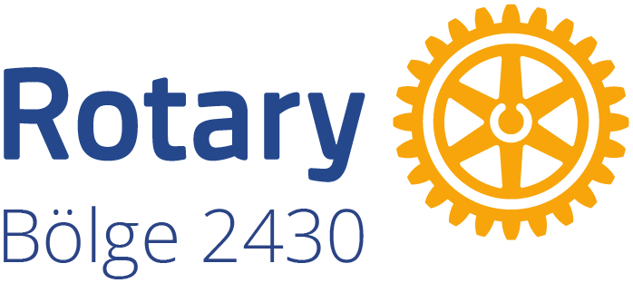
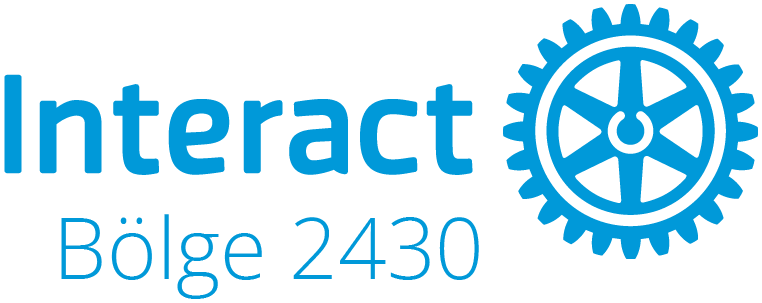

Across Rotaract District 2430, from Ankara to the Mediterranean and from the Black Sea to Baku, clubs meet every week in different cities and build projects for their own communities.
- 0
- clubs
- 0
- cities
- 0
- groups
- 0
- countries
Our district
Get to know District 2430
Rotary International divides the world into administrative districts, and Türkiye has three: 2420, 2430 and 2440. District 2430 is based in Ankara. Our Rotaract clubs are in cities in Türkiye and in Baku, Azerbaijan.
- District 2430: province with a Rotaract club
- District 2430
- District 2420: Istanbul, Thrace, Kocaeli and Yalova
- District 2440: Aegean and South Marmara
Outside Türkiye, the Baku Khazar Rotaract Club in Azerbaijan is also part of District 2430. Numbers show how many Rotaract clubs a province has; click a province with clubs to see them.
How the district works
Clubs are organised into 11 groups by location, and each group has its own Assistant DRR. The District Rotaract Representative (DRR), elected by the clubs, supports them together with the district team and coordinates joint projects and district meetings.
The Rotary year
The Rotary year starts on 1 July and ends on 30 June. Club presidents and district officers serve for one year.
Click a city to see its clubs in the club finder.
District calendar
What's coming up?
Upcoming parties, events and projects from our clubs and the district.
District events
Assembly and Conference
The district's two big gatherings of the year: the Assembly that prepares us for the new term, and the Conference where we look back on it together.
District feed
Who meets where this week?
This list is built from the meeting days clubs have registered on My Rotary. Clubs that meet twice a month only appear in their meeting weeks. Please contact the club before visiting.
News from our clubs
Follow
Rotary year
District team
The team that supports our clubs, coordinates projects and connects us with Rotary. Click a name for contact details and what each role does.
Our values
The Four-Way Test
Written by Rotarian Herbert J. Taylor in 1932, these four questions are the ethical compass of the whole Rotary family. Of the things we think, say or do, we ask:
- 1
Is it the truth?
- 2
Is it fair to all concerned?
- 3
Will it build goodwill and better friendships?
- 4
Will it be beneficial to all concerned?
Rotary International
Part of a worldwide family
Rotary International was founded in Chicago in 1905 by Paul Harris and his friends. Today it is one of the world's largest service networks, with more than 1.4 million Rotarians and tens of thousands of Rotaract clubs in over 200 countries and geographical areas.
The first Rotaract club was founded in 1968. Since 2019, Rotaract has been a membership type of Rotary International, open to anyone aged 18 or over.
Visit rotary.orgRotary's 7 areas of focus
- Promoting peace
- Fighting disease
- Providing clean water, sanitation and hygiene
- Saving mothers and children
- Supporting education
- Growing local economies
- Protecting the environment
Rotary family 2430
Three generations, one district
In District 2430, Rotary, Rotaract and Interact clubs serve different age groups and work towards the same goals.

Rotary 2430
Rotary clubs of professional leaders, who sponsor and mentor Rotaract and Interact clubs.
rotary2430.org.tr
Rotaract 2430
Young people and young professionals aged 18 and over: service, leadership and friendship.
You are here
Interact 2430
Clubs where young people aged 12–18 serve their schools and communities.
Visit websiteJoin us.
Write to the district team to join a club, start a new club in your city or volunteer for district projects. Your message goes straight to the district email address.